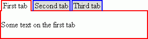

Version 3.0.0
TabbedPane |
||||||||||||||||||||||||||||||||||||||||||||
|
Developer’s Guide Home
Installation and Configuration Common Concepts Components Index Border Layout Panel Calendar Chart Command Button Command Link Composite Filter Confirmation Data Table Date Chooser Day Table Drop Down Field Dynamic Image Folding Panel For Each Graphic Text Hint Label Input Text Input Textarea Layered Pane Level Indicator Popup Layer Popup Menu Select Boolean Checkbox Select Many Checkbox Select One Radio Spinner Suggestion Field Tabbed Pane Tab Set Tree Table Two List Selection Window Focus Load Bundle Scroll Position Ajax Framework Validation Framework Tag Reference API Reference |
Key Features
Specifying Tabs ContentTo add the TabbedPane component to a page, use the <o:tabbedPane> tag. There are two ways to define the tabs and the page contents within them:
The following example shows a simple two-page TabbedPane component: <o:tabbedPane> <o:subPanel caption="First tab"> <h:outputText value="Some text on the first tab" /> </o:subPanel> <o:subPanel caption="Second tab"> <h:outputText value="Some text on the second tab"/> </o:subPanel> </o:tabbedPane>
Here's an example of how you can do it: <o:tabbedPane>
<o:subPanels
value="#{TabbedPaneBean.subPanels}"/>
</o:tabbedPane>
You can combine these two approaches by placing the <o:subPanel> and <o:subPanels> tags in any order you need. By using the selectedIndex integer attribute of the <o:tabbedPane> tag, you can set a currently selected tab. By default, it is "0", which means that the first tab will be selected on page load. The selectedIndex attribute can be specified as a constant or a value-binding expression. In the example below, the third tab of the TabbedPane is selected when the page is loaded. <o:tabbedPane selectedIndex="2"> <o:subPanels value="#{TabbedPaneBean.subPanels}"/> </o:tabbedPane> Note that TabbbedPane tabs are indexed regardless of the rendered attribute. It means that the selectedIndex attribute refers to all of the tabs specified in the TabbedPane component, but not just visible tabs. Loading ModesThe way the data in the TabbedPane component is loaded depends on the loadingMode attribute, which can take one of the following values:
The example below uses the "client" loading mode. <o:tabbedPane loadingMode="client"> <o:subPanels value="#{TabbedPaneBean.subPanels}"/> </o:tabbedPane> Customizing the AppearanceBy default, the tabs appear at the top of the TabbedPane, but they can be displayed on any of the four sides of the component. To specify the placement of tabs, set the tabPlacement attribute to one of the following values: "top" (default), "left", "bottom" or "right". Also, by setting the tabAlignment attribute to "topOrLeft" (default) or "bottomOrRight", you specify along which edge the tabs will be aligned. For example, you can place the tabs on the left side of the TabbedPane and align them along the bottom of the component. The interval between the tabs is defined in pixels by the tabGapWidth attribute. By default, it is set to "2". The size of the tabs depends on what is displayed in them. By default, the TabbedPane component is adjusted to accommodate the content of a currently selected page. The following example shows a fixed-sized TabbedPane with the tabs located on the left and aligned to the bottom of the component, and spaced at 5 pixels apart. <o:tabbedPane tabGapWidth="5" tabPlacement="left" tabAlignment="bottomOrRight"> <o:subPanels value="#{TabbedPaneBean.subPanels}"/> </o:tabbedPane> Customizing StylesWith the TabbedPane component, you can define styles for the entire component as well as it individual parts in the normal and rollover states. The style-related attributes are given in the table below.
Note
frontBorderStyle="2px solid red" backBorderStyle="2px solid blue" And here is the result: |  Note Keyboard SupportThe user can switch the selected tab with the the Left/Right/Up/Down keys when the TabbedPane has the keyboard focus. The TabbedPane can be made non-focusable and thus not having keyboard control by assigning false to its focusable attribute. Note that disabling focusability affects only the TabbedPane itself, but not its children, which retain their usual keyboard support in any case. The TabbedPane has the following attributes that allow customizing its look in the focused state:
Client-Side EventsThe TabbedPane component supports a set of standard client-side events such as onclick, ondblclick, onmousedown, onmouseover, onmouseup, onmouseout, onmousemove, onkeydown, onkeyup, onkeypress. In addition, the TabbedPane provides a component-specific onselectionchange event which occurs when the user selects a tab. Server-Side Event ListenersTo enable you to handle tab selection change on the server side, the TabbedPane component provides the selectionChangeListener attribute. This attribute is MethodBinding that must point to the method that accepts a org.openfaces.event.SelectionChangeEvent. SelectionChangeEvent extends javax.faces.event.FacesEvent and adds the oldIndex and newIndex properties to it. The specified method will be called during the Process Validations phase of the request processing lifecycle, when a selected tab in the TabbedPane is changed. The following example shows the use of the selectionChangeListener attribute: <o:tabbedPane selectionChangeListener="#{TPBean.selectionChanged}"> <o:subPanels value="#{TPBean.subPanels}"/> </o:tabbedPane> You can also add a selection change listener (which is the implementation of the org.openfaces.event.SelectionChangeListener interface) to the TabbedPane component by using the <o:selectionChangeListener> tag: <o:tabbedPane> <o:subPanels value="#{TPBean.subPanels}"/> <o:selectionChangeListener type="my.MySelectionChangeListener"/> </o:tabbedPane> There is also immediate attribute that is used to specify whether or not selectionChangeListener should be executed immediately (during the Apply Request Values phase of the request processing lifecycle instead of Process Validations phase). Client-Side APIAll client-side API methods of the TabbedPane component are listed in the following table:
|
|||||||||||||||||||||||||||||||||||||||||||
| © 2010 TeamDev Ltd. | ||||||||||||||||||||||||||||||||||||||||||||